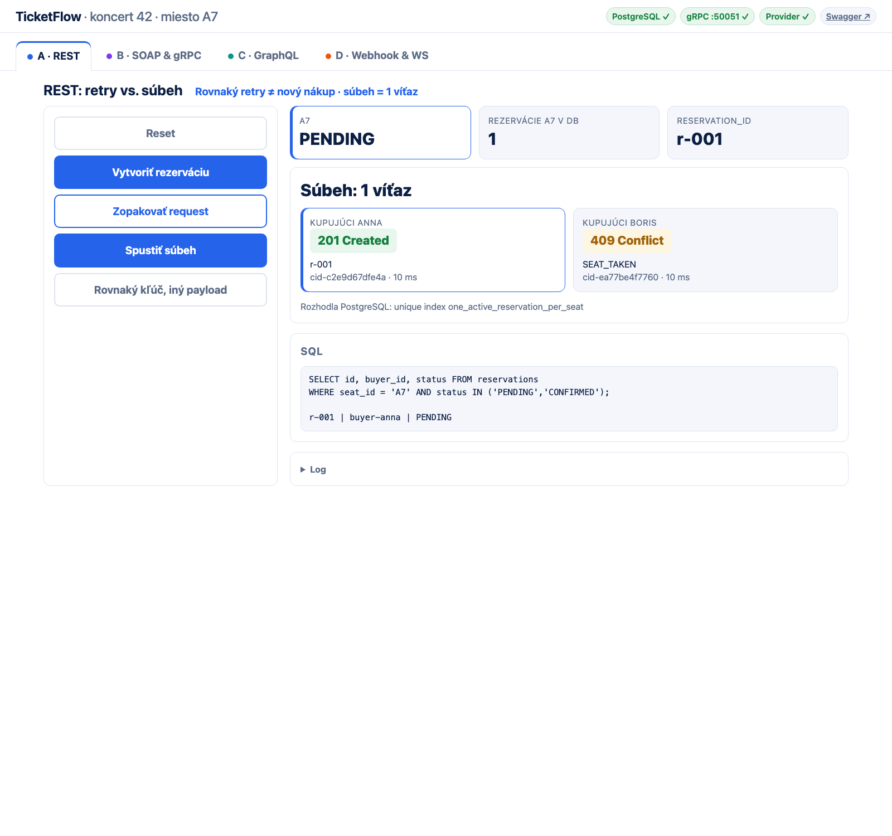
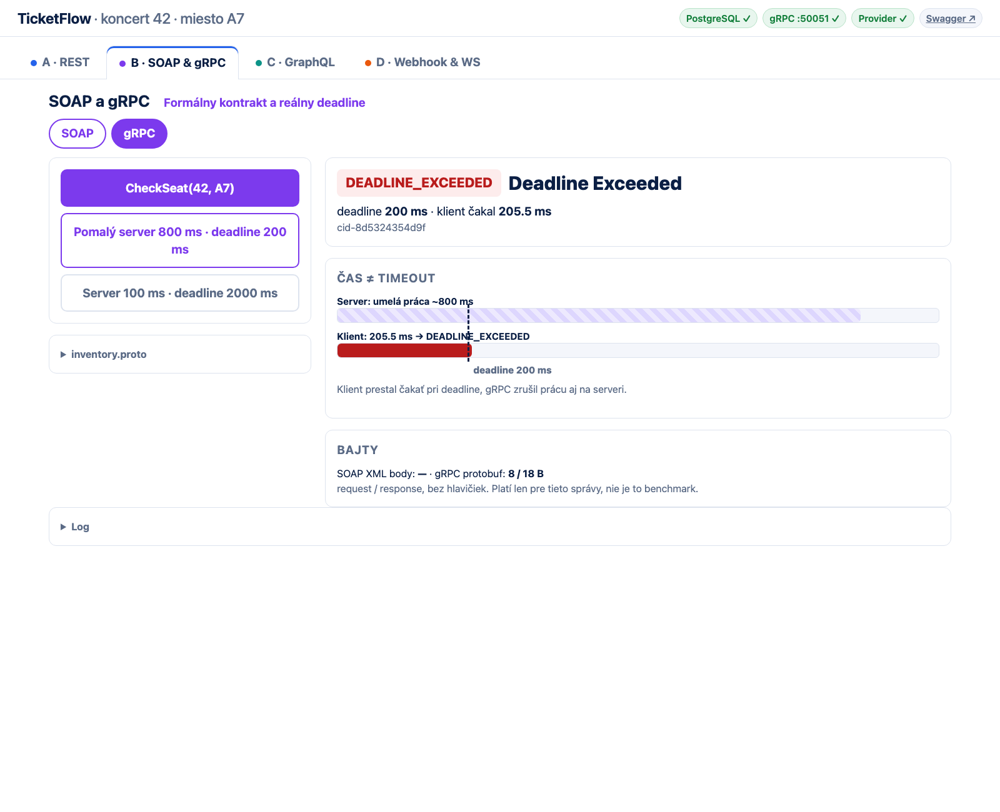
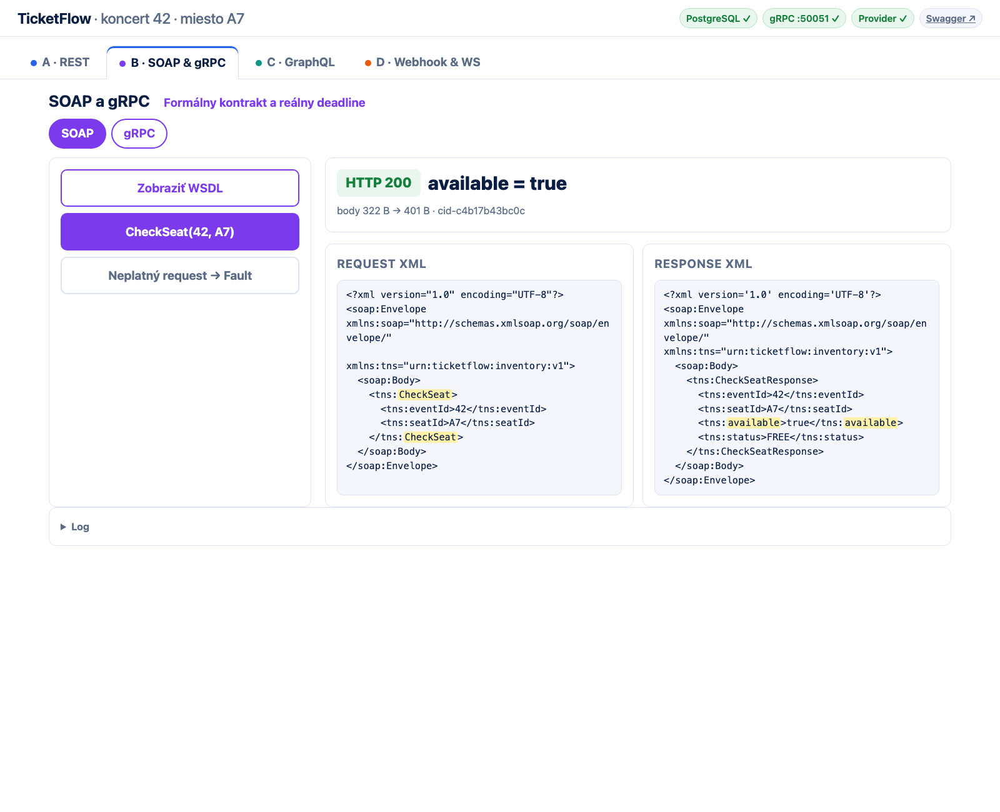
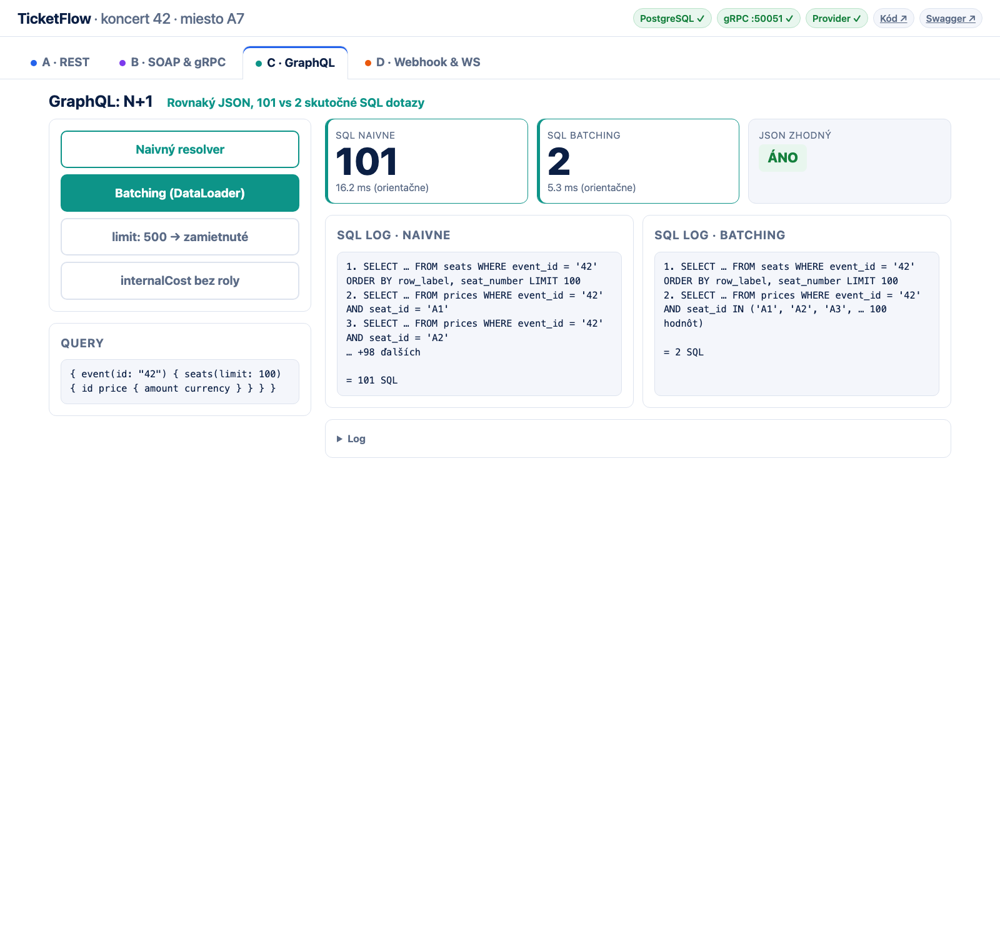
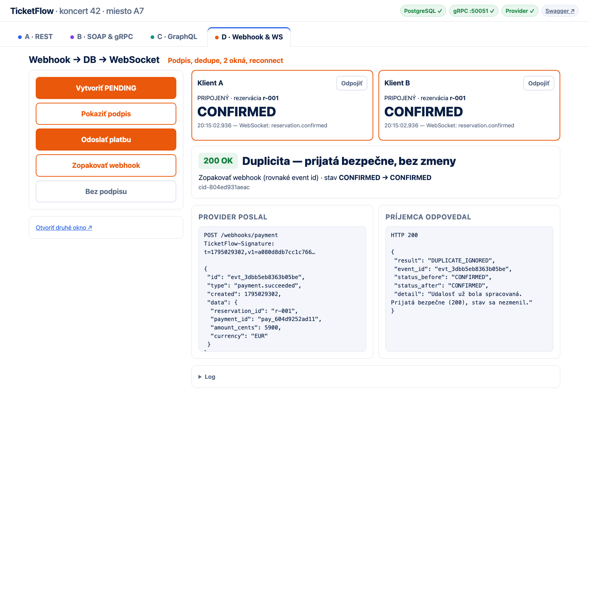

{
"ok": true,
"db": "ok",
"grpc": "SERVING",
"provider": "ok"
}{
"retry": {
"first": {
"id": "r-001",
"event_id": "42",
"seat_id": "A7",
"buyer_id": "buyer-anna",
"status": "PENDING",
"created_at": "2026-11-18T21:31:11.170170+00:00",
"updated_at": "2026-11-18T21:31:11.170170+00:00"
},
"second": {
"id": "r-001",
"event_id": "42",
"seat_id": "A7",
"buyer_id": "buyer-anna",
"status": "PENDING",
"created_at": "2026-11-18T21:31:11.170170+00:00",
"updated_at": "2026-11-18T21:31:11.170170+00:00"
},
"replayed": "true"
},
"mismatch": {
"type": "https://ticketflow.local/problems/idempotency_key_reused",
"title": "Kľúč už bol použitý s iným payloadom",
"status": 422,
"code": "IDEMPOTENCY_KEY_REUSED",
"detail": "Rovnaký Idempotency-Key s iným telom požiadavky je chyba klienta. Nič sa nezmenilo.",
"correlation_id": "cid-c4c7885f9856",
"timestamp": "2026-11-18T21:31:11.176+00:00"
},
"race": {
"buyer-anna": {
"status": 201,
"body": {
"id": "r-001",
"event_id": "42",
"seat_id": "A7",
"buyer_id": "buyer-anna",
"status": "PENDING",
"created_at": "2026-11-18T21:31:11.198099+00:00",
"updated_at": "2026-11-18T21:31:11.198099+00:00"
}
},
"buyer-boris": {
"status": 409,
"body": {
"type": "https://ticketflow.local/problems/seat_taken",
"title": "Sedadlo je obsadené",
"status": 409,
"code": "SEAT_TAKEN",
"detail": "Sedadlo A7 už má aktívnu rezerváciu. Rozhodol PostgreSQL UNIQUE index one_active_reservation_per_seat.",
"correlation_id": "cid-1418553164ed",
"timestamp": "2026-11-18T21:31:11.199+00:00",
"constraint": "one_active_reservation_per_seat"
}
}
},
"db": {
"seat": {
"event_id": "42",
"seat_id": "A7",
"available": false,
"status": "PENDING",
"reservation_id": "r-001"
},
"active_reservations": [
{
"id": "r-001",
"buyer_id": "buyer-anna",
"status": "PENDING",
"created_at": "2026-11-18T21:31:11.198099+00:00"
}
],
"active_count": 1,
"sql": "SELECT id, buyer_id, status, created_at FROM reservations WHERE event_id = '42' AND seat_id = 'A7' AND status IN ('PENDING', 'CONFIRMED')",
"at": "2026-11-18T21:31:11.201+00:00"
}
}{
"soap": {
"endpoint": "http://127.0.0.1:8000/soap",
"http_status": 200,
"is_fault": false,
"request_xml": "<?xml version=\"1.0\" encoding=\"UTF-8\"?>\n<soap:Envelope xmlns:soap=\"http://schemas.xmlsoap.org/soap/envelope/\"\n xmlns:tns=\"urn:ticketflow:inventory:v1\">\n <soap:Body>\n <tns:CheckSeat>\n <tns:eventId>42</tns:eventId>\n <tns:seatId>A7</tns:seatId>\n </tns:CheckSeat>\n </soap:Body>\n</soap:Envelope>\n",
"response_xml": "<?xml version='1.0' encoding='UTF-8'?>\n<soap:Envelope xmlns:soap=\"http://schemas.xmlsoap.org/soap/envelope/\" xmlns:tns=\"urn:ticketflow:inventory:v1\">\n <soap:Body>\n <tns:CheckSeatResponse>\n <tns:eventId>42</tns:eventId>\n <tns:seatId>A7</tns:seatId>\n <tns:available>true</tns:available>\n <tns:status>FREE</tns:status>\n </tns:CheckSeatResponse>\n </soap:Body>\n</soap:Envelope>\n",
"request_body_bytes": 322,
"response_body_bytes": 401,
"client_elapsed_ms": 5.3,
"at": "2026-11-18T21:31:11.224+00:00",
"correlation_id": "cid-5fe527ccbceb",
"bytes_note": "Merané: veľkosť HTTP body (XML Envelope), bez HTTP hlavičiek."
},
"soap_fault": {
"endpoint": "http://127.0.0.1:8000/soap",
"http_status": 500,
"is_fault": true,
"request_xml": "<?xml version=\"1.0\" encoding=\"UTF-8\"?>\n<soap:Envelope xmlns:soap=\"http://schemas.xmlsoap.org/soap/envelope/\"\n xmlns:tns=\"urn:ticketflow:inventory:v1\">\n <soap:Body>\n <tns:CheckSeat>\n <tns:eventId>42</tns:eventId>\n </tns:CheckSeat>\n </soap:Body>\n</soap:Envelope>\n",
"response_xml": "<?xml version='1.0' encoding='UTF-8'?>\n<soap:Envelope xmlns:soap=\"http://schemas.xmlsoap.org/soap/envelope/\" xmlns:tns=\"urn:ticketflow:inventory:v1\">\n <soap:Body>\n <soap:Fault>\n <faultcode>soap:Client</faultcode>\n <faultstring>Chýba povinný element seatId.</faultstring>\n <detail>\n <tns:errorCode>MISSING_ELEMENT</tns:errorCode>\n </detail>\n </soap:Fault>\n </soap:Body>\n</soap:Envelope>\n",
"request_body_bytes": 288,
"response_body_bytes": 423,
"client_elapsed_ms": 4.2,
"at": "2026-11-18T21:31:11.229+00:00",
"correlation_id": "cid-ad0fa7bb9104",
"bytes_note": "Merané: veľkosť HTTP body (XML Envelope), bez HTTP hlavičiek."
},
"grpc_ok": {
"target": "grpc:50051",
"method": "/ticketflow.inventory.v1.Inventory/CheckSeat",
"request": {
"event_id": "42",
"seat_id": "A7",
"artificial_delay_ms": 0
},
"deadline_ms": null,
"request_protobuf_bytes": 8,
"ok": true,
"code": "OK",
"reply": {
"event_id": "42",
"seat_id": "A7",
"available": true,
"status": "FREE",
"server_elapsed_ms": 0
},
"response_protobuf_bytes": 16,
"client_elapsed_ms": 1.4,
"at": "2026-11-18T21:31:11.232+00:00",
"correlation_id": "cid-9e02c4e0cd63",
"bytes_note": "Merané: veľkosť serializovanej protobuf správy (bez HTTP/2 rámcov, bez 5 B gRPC prefixu a hlavičiek)."
},
"grpc_deadline": {
"target": "grpc:50051",
"method": "/ticketflow.inventory.v1.Inventory/CheckSeat",
"request": {
"event_id": "42",
"seat_id": "A7",
"artificial_delay_ms": 800
},
"deadline_ms": 200,
"request_protobuf_bytes": 11,
"ok": false,
"code": "DEADLINE_EXCEEDED",
"details": "Deadline Exceeded",
"client_elapsed_ms": 204.7,
"at": "2026-11-18T21:31:11.438+00:00",
"correlation_id": "cid-578508435451",
"bytes_note": "Merané: veľkosť serializovanej protobuf správy (bez HTTP/2 rámcov, bez 5 B gRPC prefixu a hlavičiek)."
}
}{
"naive_count": 101,
"batch_count": 2,
"naive_first_sql": [
{
"sql": "SELECT seat_id, row_label, seat_number FROM seats WHERE event_id = %(event_id)s ORDER BY row_label, seat_number LIMIT %(limit)s",
"params": {
"event_id": "42",
"limit": 100
}
},
{
"sql": "SELECT seat_id, amount_cents, currency, internal_cost_cents FROM prices WHERE event_id = %(event_id)s AND seat_id = %(seat_id)s",
"params": {
"event_id": "42",
"seat_id": "A1"
}
},
{
"sql": "SELECT seat_id, amount_cents, currency, internal_cost_cents FROM prices WHERE event_id = %(event_id)s AND seat_id = %(seat_id)s",
"params": {
"event_id": "42",
"seat_id": "A2"
}
}
],
"batch_sql": [
"SELECT seat_id, row_label, seat_number FROM seats WHERE event_id = %(event_id)s ORDER BY row_label, seat_number LIMIT %(limit)s",
"SELECT seat_id, amount_cents, currency, internal_cost_cents FROM prices WHERE event_id = %(event_id)s AND seat_id IN (%(seat_ids_1)s, %(seat_ids_2)s, %(seat_ids_3)s, %(seat_ids_4)s, %(seat_ids_5)s, %(seat_ids_6)s, %(seat"
],
"naive_ms": 21.5,
"batch_ms": 4.8,
"sample": [
{
"id": "A1",
"price": {
"amount": 59.0,
"currency": "EUR"
}
},
{
"id": "A2",
"price": {
"amount": 59.0,
"currency": "EUR"
}
},
{
"id": "A3",
"price": {
"amount": 59.0,
"currency": "EUR"
}
}
]
}{
"reservation_id": "r-001",
"unsigned": {
"status": 400,
"body": {
"type": "https://ticketflow.local/problems/missing_signature",
"title": "Webhook odmietnutý",
"status": 400,
"code": "MISSING_SIGNATURE",
"detail": "Chýba hlavička TicketFlow-Signature.",
"correlation_id": "cid-fd00561813f3",
"timestamp": "2026-11-18T21:31:11.549+00:00",
"db_changed": false
}
},
"bad-signature": {
"status": 401,
"body": {
"type": "https://ticketflow.local/problems/invalid_signature",
"title": "Webhook odmietnutý",
"status": 401,
"code": "INVALID_SIGNATURE",
"detail": "HMAC podpis nesedí s raw body. Databáza sa nezmenila.",
"correlation_id": "cid-c23fc68b30c0",
"timestamp": "2026-11-18T21:31:11.563+00:00",
"db_changed": false
}
},
"payment": {
"note": "Nová udalosť s platným HMAC podpisom.",
"sent": {
"url": "http://api:8000/webhooks/payment",
"headers": {
"Content-Type": "application/json",
"TicketFlow-Signature": "t=1795037471,v1=f0bdc5b4d4169f1228d05791193cf27a2ea69ef094c0804e31bb3e948f7f249a",
"X-Correlation-ID": "cid-ae96eb5db70e"
},
"raw_body": "{\"id\":\"evt_c3ec1f798484a36a\",\"type\":\"payment.succeeded\",\"created\":1795037471,\"data\":{\"reservation_id\":\"r-001\",\"payment_id\":\"pay_6bc29e53280c\",\"amount_cents\":5900,\"currency\":\"EUR\"}}"
},
"received": {
"status": 200,
"body": {
"result": "PROCESSED",
"outcome": "CONFIRMED",
"event_id": "evt_c3ec1f798484a36a",
"reservation_id": "r-001",
"status_before": "PENDING",
"status_after": "CONFIRMED",
"signature": "VALID",
"websocket_deliveries": 2,
"correlation_id": "cid-ae96eb5db70e"
}
},
"elapsed_ms": 6.2,
"at": "2026-11-18T21:31:11.577+00:00",
"correlation_id": "cid-ae96eb5db70e"
},
"replay": {
"status": 200,
"body": {
"result": "DUPLICATE_IGNORED",
"event_id": "evt_c3ec1f798484a36a",
"reservation_id": "r-001",
"status_before": "CONFIRMED",
"status_after": "CONFIRMED",
"first_processed_at": "2026-11-18T21:31:11.575640+00:00",
"first_outcome": "CONFIRMED",
"detail": "Udalosť už bola spracovaná. Prijatá bezpečne (200), stav sa nezmenil.",
"correlation_id": "cid-8aff7e638401"
}
},
"snapshot": {
"id": "r-001",
"event_id": "42",
"seat_id": "A7",
"buyer_id": "buyer-preflight",
"status": "CONFIRMED",
"created_at": "2026-11-18T21:31:11.536383+00:00",
"updated_at": "2026-11-18T21:31:11.575640+00:00",
"snapshot_at": "2026-11-18T21:31:11.590+00:00"
}
}



